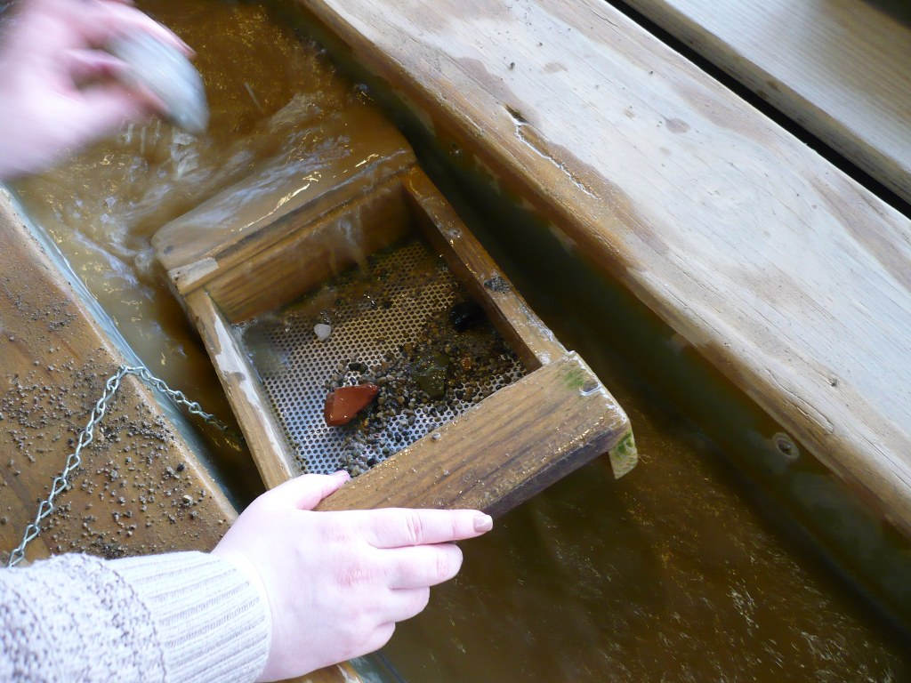

Overview
Welcome!
|
Your IP Address: Powered by Find-IP.net
|
Exact Time right now in London: Exact Time right now in Chicago: Exact Time right now in Los Angeles: |
Other Sites: Google Voice •●• Google Mail •●• TempText Code •●•
Amazon •●• BitChute •●• Odysee •●• Brighteon •●• ProtonMail •●• ChatGPT •●• Uber •●• Blank •●•
Xumo TV •●• FoneFinder •●• USPS ZipCode •●• Telegram •●• Proxies: ProxySite, Didsoft •●•
CraigsList: Missouri, Arkansas •●• Calculators: WolframAlpha, Microsoft MathSolver,
Calculators: OnlineConversion, AskNumbers, Calculator-Converter •●• DuckAI •●•
Weather: Nixa, Fayetteville •●• Maps: Apple, Bing, MapQuest, OpenStreetMap, Google
My Homepage Contents: Overview •●• Tools A-L •●• Tools M-V •●• Tools W-Z •●• QuickSurf •●• Newspaper •●• HOT LINKS •●• Top Drawer •●• Health News •●• TempText Page •●•
MidWest News •●• Technology News •●• Chicago Time •●• Shopping •●• Television •●• Fade •●•
Christian News •●• Christian Page •●• Parallel Bible •●• MidWest Cams •●• MidWest Links •●•
Gazelle •●• Wage Table •●• Phonebook •●• PC Navigator •●• Cryptogram •●• Calendar •●•
Print Test •●• Study •●• Random Web •●• Parlour •●• Reference & Utilities •●• Scroll •●•
Calculator •●• Media Test •●• Whiteboard •●• Sound Test •●• Sound Test 2 •●• Wheel •●•
Countdown •●•
MicLine •●•
MicNumber •●•
MicBars •●•
Last Hour LI •●• Concentrate •●•
Clocks:
GearClock,
DotClock,
SimpleClock,
Merge •●•
Lamps:
DotLines,
Seasons,
NeonDance
Lamps:
Dim,
Bright,
Bow,
Candle2,
Hex,
Wave,
Disco,
Dots,
Shattered,
JitterNoise,
SoftNoise
Lamps:
ColourNoise,
Test1,
Test2,
Test3,
Test4,
Draw,
Swirls,
Pretend,
DotGrid,
Shade,
Bilateral
Lamps:
SlowDance,
Candle7,
Pinwheels,
FireBlur,
Flicker,
Graphs,
Pulse,
LavaLamp
Lamps:
ShapeZoom,
Space,
Retro,
GraphScroll,
BlinkGrid,
RGBTV,
Chimes,
Sandy,
Shadows
Lamps:
Circuit,
OilOcean,
BlockDraw,
Tour,
Verticals,
Frosty
Lamps:
RGB-Waves,
Celebrate,
Sketching,
ElectriCalm
John Rekow Jr.'s Homepage is at five locations:
GitHub Topcities (British Indian Ocean Territory; San Francisco, California): https://topcities.github.io/johnrekow/
Somee.com (Charlotte, North Carolina): http://johnrekow.somee.com/
Lycos Angelfire Realm 2 (Waltham, Massachusetts): http://www.angelfire.com/realm2/johnrekow/
Netlify (Ashburn, Virginia; London, UK): https://johnrekow.netlify.app/
Cloudflare (San Francisco, California; Montreal, Quebec, Canada): http://johnrekow.pages.dev/

|
|
Contact Information:
Email is preferred, and has the greatest chance of ensuring a fast reply.
Email: johnrekow@gmx.co.uk
or click the button below to copy the email address into your clipboard...
Leave a Voice Mail Message:
916-365-2715
or click the button below to copy the phone number into your clipboard...
Disclaimer: Whilst the content of this website has been prepared responsibly and carefully, the website author and its webhost make no warranty as to the content, accuracy, timeliness or completeness of the information, or that the information in this website may be relied upon for any reason. Neither the website author nor its webhost are responsible or liable for any losses or damage of whatsoever kind arising from your reliance on or use of information provided in this website.
